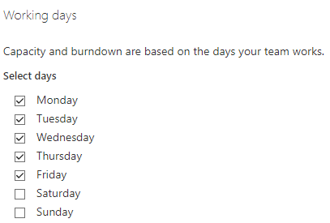

Azure DevOps General - Working Days
Azure DevOps Boards'da "Genel - Çalışma Günleri" ayarlarını kullanarak aşağıdaki işlemleri gerçekleştirebilirsiniz:
- Çalışma günlerini belirleme: Projede hangi günlerin çalışma günü olarak kabul edileceğini belirleyebilirsiniz. Örneğin, hafta içi günler (Pazartesi'den Cuma'ya) çalışma günleri olarak ayarlanabilir.
- Tatil günlerini ekleme: Özel tatil günlerini ekleyerek çalışma takvimine dahil edebilirsiniz. Bu sayede, projenin tatil günlerindeki etkileşimleri ve süreleri hesaba katabilirsiniz.
- Çalışma saatlerini ayarlama: Günlük çalışma saatlerini belirleyebilirsiniz. Başlangıç ve bitiş saatlerini belirleyerek her gün için çalışma süresini tanımlayabilirsiniz.
- Takvimdeki özel günleri belirleme: Projeyle ilişkili önemli günleri belirleyebilirsiniz. Örneğin, lansman tarihi veya önemli bir dönüm noktası gibi özel günleri takvime ekleyebilirsiniz.
Bu Genel - Çalışma Günleri ayarları, Azure DevOps Boards'da proje planlaması ve süre tahminleri yaparken çalışma günleri ve saatlerini dikkate almanızı sağlar. Bu sayede, doğru zaman çizelgesi ve tahminler oluşturarak proje yönetimini daha etkili bir şekilde gerçekleştirebilirsiniz.
